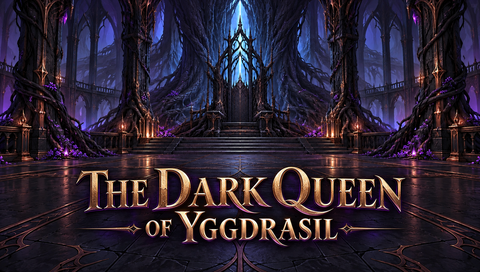
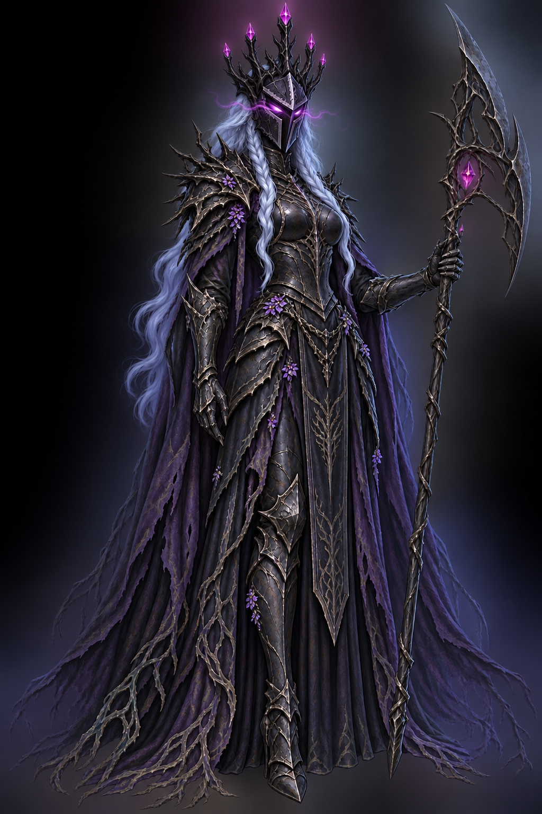

The Dark Queen of Yggdrasil
PSP-Menüvorschau: geschlossener Helm mit Astkrone, violette Augen und pulsierender Glühnebel. 16 Sekunden mit Orchestermusik.
Musik: The Final Battle · skrjablin · CC0. Video und Musik sind als ICON1.PMF / SND0.AT3 eingebunden. Noch kein Test auf echter PSP.Gesetztes Wallpaper

Bearbeitetes Bild in voller Größe

Quellen und Exportdetails · MP4 · EBOOT.PBP